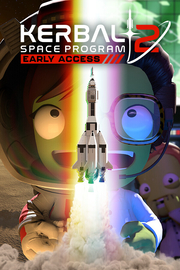

Kerbal Space Program 2
Detalles
|  | |
| Tiempo de juego | No Jugado |
| Última actividad | Nunca |
| Añadido | 11/13/2024 0:35:38 |
| Modificado | 11/13/2024 1:06:02 |
| Estado de finalización | No Jugado |
| Librería | Playnite |
| Fuente | PORCHE |
| Plataforma | PC (Windows) |
| Fecha de lanzamiento | 2/24/2023 |
| Puntuación de la Comunidad | 35 |
| Puntuación de la Crítica | |
| Puntuación de usuario | |
| Género | Acceso anticipado Indie Simuladores |
| Desarrollador | Intercept Games |
| Editor | Private Division |
| Característica | Préstamo Familiar Un Jugador |
| Enlaces | Punto de encuentro Discusiones Guías Noticias Página de la tienda PCGamingWiki |
| Tag | Acceso anticipado Ambientales Aventura Ciencia Ciencia ficción Construcción Difíciles Divertidos Espacio Exploración Física Indie Modificables Multijugador Mundo abierto Realistas Sandbox Simulación Simulador espacial Un jugador |
Descripción

El Kerbal Space Program original es uno de los juegos más queridos de todos los tiempos y, años después de su lanzamiento, ha crecido como nunca. Ahora hemos rediseñado a fondo Kerbal Space Program 2 para adaptarlo a las exigencias de la exploración espacial moderna y de próxima generación, pero manteniendo los monumentales cimientos del juego original. Desarrolla un programa espacial, construye potentes naves espaciales y explora cuerpos celestes enormes mientras vas desvelando los misterios del cosmos.
Funciones destacadas que llegarán durante el acceso anticipado:

Tecnología de nueva generación:
A medida que el juego se vaya actualizando, los jugadores podrán acceder a una nueva generación de herramientas y tecnología que incluye motores, piezas, combustibles y mucho más. Esta nueva tecnología creará nuevos rompecabezas que los jugadores tendrán que resolver, pero también les permitirá realizar nuevas proezas de exploración espacial, tanto dentro como más allá del sistema Kerbolar original.Colonias:
Las colonias llegan como gran novedad a Kerbal Space Program 2. Además de plantear sus propios desafíos físicos, las colonias dependen de la recolección de recursos para construir estructuras, estaciones espaciales, habitáculos, así como nuevos tipos de combustible. Con el tiempo, estas colonias serán lo bastante avanzadas como para construir vehículos con los que viajar al espacio profundo y más allá.
Viajes interestelares:
La tecnología de nueva generación, las colonias y la recolección de recursos sistemática conducen a un nuevo nivel de exploración: los viajes interestelares. En Kerbal Space Program 2, la tecnología interestelar allana el camino al descubrimiento de nuevos sistemas estelares y cuerpos celestes, que presentan nuevos desafíos y albergan tesoros secretos. Entre ellos: Charr, un abrasador planeta de hierro; Ovin, una supertierra con anillos y una gravedad implacable; Rask y Rusk, un sistema binario atrapado en una mortífera danza; y muchos más lugares que premian la exploración.Multijugador/Mods:
El desarrollo tecnológico realizado en los cimientos de Kerbal Space Program 2 se basará en la popular posibilidad de crear mods del juego original. Además, permitirá incluir el modo multijugador que los jugadores llevaban tanto tiempo esperando. Muy pronto, los jugadores podrán compartir desafíos de exploración en el espacio profundo. Revelaremos más información sobre estas funciones más adelante.